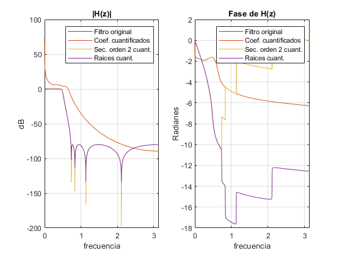
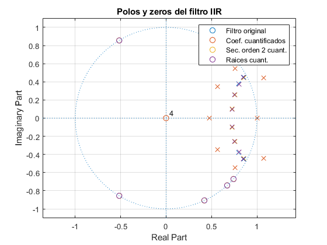

Contents
Práctica 6
Teresa González y Miguel Oleo
clear all close all clc
Introducción
En esta práctica implementaremos un filtro IIR y comprobaremos el efecto de la cuantificación. Esto es muy importante ya que en los procesadores utilizan precisión finita debido a que hay que cuantificar el filtro para poder implementarlo.
Primero diseñamos un filtro (original) y lo compararemos con versiones distintas del mismo.
Cuantificación de los coeficientes de un filtro
Apartado a y b)
Cargamos fichero y el filtro previamente diseñado. Con la función freqz conseguimos la respuesta en frecuencia del filtro. Luego procedemos a calcular las raices de los coeficientes. Posteriormente cuantificamos los coeficientes del filtro original y calculamos sus raices. Finalmente, volvemos a calcular la respuesta en frecuencia del filtro cuantificado.
load('PDS_P6_LE2_G4.mat') load('Filter_1.mat') % Número de puntos empleados para representar la respuesta en frecuencia N = 5e4; % Respuesta en frecuencia del filtro IIR original [H, w] = freqz(Num1, Den1, N); % Raices del polinomio original rb = roots(Num1); ra = roots(Den1); r_og = [rb;ra]; q = quantizer('fixed','round','saturate',[16 8]); Num1_q = bin2num(q,num2bin(q,Num1)); Den1_q = bin2num(q,num2bin(q,Den1)); % Raices del polinomio original cuantificado rb_q = NaN(size(rb)); % Así fuerzo a que todos los vectores de raices tengan la misma longitud y así evitar errores en zplane roots(Num1_q); rb_q(1:length(roots(Num1_q))) = roots(Num1_q); ra_q = NaN(size(ra)); ra_q(1:length(roots(Den1_q))) = roots(Den1_q); r_q = [rb_q;ra_q]; % Respuesta en frecuencia del filtro IIR con sus coeficientes cuantificados [H_q, ~] = freqz(Num1_q.', Den1_q.', N);
Secciones de segundo orden
Apartado a)
Utilizamos la función tfsos de matlab para descomponer el filtro original en secciones de segundo orden. Esta función nos devuelve una matriz con estas secciones y la ganancia que multiplica a todas ellas.
[sos, g] = tf2sos(Num1,Den1);
Apartado b)
Recorremos la matriz sos para cuantificar las secciones correspondientes al numerador y denominador. También calculamos las raices de estas secciones cuantificadas. Por último, obtenemos la respuesta en frecuencia de la matriz sos cuantificada.
roots_bq = []; roots_aq = []; sos_q = zeros(size(sos)); for i=1:size(sos,1) for k=1:size(sos,2) sos_q(i,k) = bin2num(q, num2bin(q, sos(i,k))); end roots_bq = [roots_bq; roots(sos_q(i,1:3))]; roots_aq = [roots_aq; roots(sos_q(i,4:6))]; end % Raices de las secciones de segundo orden cuantificadas rsb_q = NaN(size(rb)); rsb_q(1:length(roots_bq)) = roots_bq; rsa_q = NaN(size(ra)); rsa_q(1:length(roots_bq)) = roots_aq; r_q2 = [rsb_q;rsa_q]; % Respuesta en frecuencia del nuevo sistema cuantificado [H_q2, ~] = freqz(sos_q, N);
Raíces en Secciones de Segundo Orden
Apartado a)
Descomponemos la matriz sos en las secciones correspondientes al numerador y denominador. Guardamos las raices de dichas secciones.
R_Num1_1 = roots(sos(1,1:3)); R_Num1_2 = roots(sos(2,1:3)); R_Num1_3 = roots(sos(3,1:3)); R_Num1_4 = roots(sos(4,1:3)); R_Den1_1 = roots(sos(1,4:end)); R_Den1_2 = roots(sos(2,4:end)); R_Den1_3 = roots(sos(3,4:end)); R_Den1_4 = roots(sos(4,4:end));
Apartado b)
Cuantificamos las raices de las secciones obtenidas en el apartado anterior. También obtenemos el polinomio correspondiente a estas raices (separando numerador y denominador) para calcular la respuesta en frecuencia.
R_Num1_1_q = bin2num(q,num2bin(q,R_Num1_1)).'; R_Num1_2_q = bin2num(q,num2bin(q,R_Num1_2)).'; R_Num1_3_q = bin2num(q,num2bin(q,R_Num1_3)).'; R_Num1_4_q = bin2num(q,num2bin(q,R_Num1_4)).'; R_Den1_1_q = bin2num(q,num2bin(q,R_Den1_1)).'; R_Den1_2_q = bin2num(q,num2bin(q,R_Den1_2)).'; R_Den1_3_q = bin2num(q,num2bin(q,R_Den1_3)).'; R_Den1_4_q = bin2num(q,num2bin(q,R_Den1_4)).'; % Raices cuantificadas rrsb_q = [R_Num1_1_q, R_Num1_2_q, R_Num1_3_q, R_Num1_4_q].'; rrsa_q = [R_Den1_1_q, R_Den1_2_q, R_Den1_3_q, R_Den1_4_q].'; r_q3 = [rrsb_q; rrsa_q]; % Se obtiene el polinomio global para todas las raices del numerador Num_q_roots = poly(rrsb_q); % Lo mismo para el denominador Den_q_roots = poly(rrsa_q); % Se obtiene la respuesta en frecuencia del nuevo sistema donde se han % cuantificado las raices [H_q3, ~] = freqz(Num_q_roots, Den_q_roots, N);
Análisis general
Apartado a)
En este apartado vamos a comprobar las diferencias en términos de error cuadrático medio entre las raices originales y: las raices de los coeficientes cuantificados del filtro original, las raices de las secciones de segundo orden cuantificadas y cuantificacion de las raices de las secciones de segundo orden.
Como se puede observar en el resultado, el ECM es de un orden de 10 mayor en el primer caso, ya que la cuantificación produce cambios en la posición de las raices y en la respuesta en frecuencia. Para disminuir este error, se divide el orden del polinomio original en secciones de segundo orden, con esto obtenemos menor número de coeficientes y de raices por sección. Queda demostrado, que en los dos ultimos casos, el ECM es menor.
Pese a que cuantificar coeficientes no es lo mismo que cuantificar raices, el error es despreciable entre sacar primero las raices y luego cuantificar o viceversa. Por lo tanto, no merece la pena sacar las raíces primero, ya que esto nos obliga a emplear una forma acoplada, que complica el sistema (Hardware).
% Error entre las raices originales y la versión de los coeficientes % cuantificados disp('ECM entre raices del original y las raices del original cuantificada') ECM_1 = ECM(r_og,r_q) % Error entre las racies originales y la versión con secciones de segundo % orden cuantificadas disp('ECM entre raices del original y las raices de sos cuantificada') ECM_2 = ECM(r_og,r_q2) % Error entre las raices originales y la versión dónde se cuantifican las % raices disp('ECM entre raices del original y la cuantificación de las raices de sos') ECM_3 = ECM(r_og,r_q3)
ECM entre raices del original y las raices del original cuantificada
ECM_1 =
0.4152
ECM entre raices del original y las raices de sos cuantificada
ECM_2 =
0.0410
ECM entre raices del original y la cuantificación de las raices de sos
ECM_3 =
0.0419
Apartado b) y c)
En este apartado comprobamos que los resultados obtenidos en el apartado anterior concuerdan. Para ello representamos la respuesta en frecuencia en dBs de los tres filtros junto al original y sus respectivas fases.
Una vez más, se observa que el filtro con los con los coeficientes originales cuantificados no concuerda con la misma respuesta en frecuencia. También, los dos filtros obtenidos a partir de la matriz sos, son casí identicos entres si y con el filtro original. Para representar la respuesta en frecuencia, hay que recordar que la matriz sos nos devuelve la ganancia, por lo que tenemos que volver a multiplicar por la ganancia.
En cuanto a la fase, se puede observar que la pendiente es negativa en la banda de paso. Se puede observar que aunque tengan pendiente negativa, no decrecen de forma lineal y esto nos indica que no todas las frecuencias tienen el mismo retardo. También se puede observar como en la banda de rechazo varían las fases, pero esto no es relevante ya que en esas bandas al ser el módulo despreciable, la fase también lo es. Una vez más, se observa que el filtro con los coeficientes originales cuantificados, su fase, no concuerda con la original.
% Representacion respuesta en frecuencia en Hz vs dB % Representación del módulo (ganancia) figure(); subplot(1,2,1); plot(w, mag2db(abs(H))) hold on plot(w, mag2db(abs(H_q))) hold on plot(w, mag2db(abs(H_q2)*g)) hold on plot(w, mag2db(abs(H_q3)*g)) xlabel('frecuencia') ylabel('dB') title('|H(z)|') legend({'Filtro original', 'Coef. cuantificados', 'Sec. orden 2 cuant.', 'Raices cuant.'}) xlim([0, pi]) grid on % Representación de la fase subplot(1,2,2); plot(w, unwrap(angle(H))) hold on plot(w, unwrap(angle(H_q))) hold on plot(w, unwrap(angle(H_q2))) hold on plot(w, unwrap(angle(H_q3))) xlabel('frecuencia') ylabel('Radianes') title('Fase de H(z)') legend({'Filtro original', 'Coef. cuantificados', 'Sec. orden 2 cuant.', 'Raices cuant.'}) xlim([0, pi]) grid on
Apartado d)
A continuación se muestra la representación del diagrama de polos y ceros de los filtros. Los filtros son causales, ya que son implementables, por lo que la roc va hacia fuera desde el polo más lejano. El filtro original es estable ya que la roc contiene a la circunferencia de radio uno. Los filtros obtenidos a partir de la matriz sos también lo son, ya que son practicamente idénticos al filtro original y la posicion de los polos y ceros varían muy poco. Sin embargo, el filtro con los coeficientes originales cuantificados, las raíces se han movido bastante y se puede observar que se obtiene un filtro inestable, ya que hay polos fuera de la circunferencia radio 1.
figure;
zplane([rb rb_q rsb_q rrsb_q], [ra ra_q rsa_q rrsa_q], {'o', 'x'});
grid on
title('Polos y zeros del filtro IIR');
legend({'Filtro original', 'Coef. cuantificados', 'Sec. orden 2 cuant.', 'Raices cuant.'})
